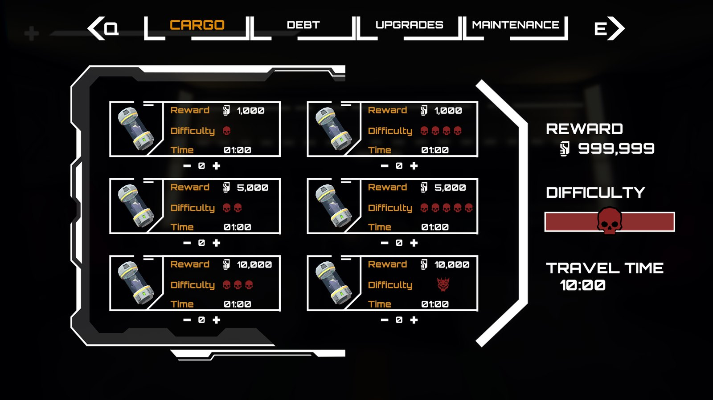

01
Cargo is the difficulty setting
- The idea
- There is no difficulty menu. Instead, the crew picks which jobs to take. Every piece of cargo has its own difficulty, and the cargo they load decides how long the warp lasts, how hard it gets and how much it pays. Choosing the run is the first decision the crew makes together.
- How it adds up
- Each tier is worth a number of points. The points from all the loaded cargo are added up, and the total decides the difficulty of the whole run. A single Deadly crate won't make a Deadly run on its own. It takes three.
Run formulas
P = sum of cargo points
Payout = Multiplier(P) × P × 250
Warp duration = 150 + 7 × P seconds
| Cargo tier | Points | Base reward | Run total | Run difficulty | Payout multiplier | |
|---|---|---|---|---|---|---|
| Easy | 2 | 500 | 0+ | Easy | 1x | |
| Medium | 3 | 750 | 6+ | Medium | 1.2x | |
| Hard | 5 | 1,250 | 12+ | Hard | 1.5x | |
| Very Hard | 8 | 2,000 | 20+ | Very Hard | 1.9x | |
| Extreme | 12 | 3,000 | 30+ | Extreme | 2.6x | |
| Deadly | 18 | 4,500 | 45+ | Deadly | 5x |
- Worked example
- Two Hard crates and one Very Hard crate add up to 18 points. That's a Hard run, so the payout is 1.5 × 18 × 250 = 6,750 credits, and the warp lasts 150 + 7 × 18 = 276 seconds, about four and a half minutes. Swapping one Hard crate for a Deadly one pushes the total to 31, an Extreme run that pays 20,150 and lasts just over six minutes.
- Why the curve is steep
- The multiplier nearly doubles at Deadly, from 2.6x to 5x. A greedy run should always be tempting, and a crew that survives one should feel like they got away with something.
